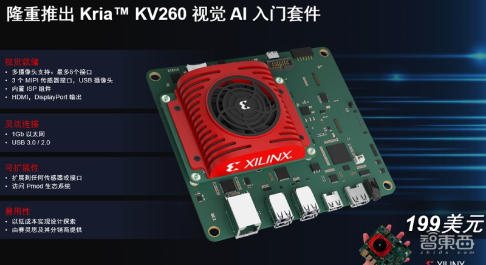

Xilinx releases special "PCB" for visual AI: the computing power is as high as 1.4tops, and it starts to run in 1 hour

Xilinx today announced the launch of KRIA series of adaptive module SOM product portfolio, including kriak26som and kriakv260 visual artificial intelligence (AI) entry kit, which will be equipped with FPGA chip to accelerate visual AI algorithm.
SOM is the core of the system small-size embedded PCB board, its size is similar to the credit card, can abstract the hardware, shorten the development cycle. SOM allows hardware designers to avoid repetitive low-end work, and also allows software designers to design in parallel with hardware designers.
According to Chetan khona, marketing director of ISM, kriak26som has 1.4tops computing power and supports petalinux and Ubuntu Linux. Its performance and power consumption are superior to gpusom's competitors.
In addition, Xilinx also launched the kriakv260 visual AI entry kit, which can be started in one hour for visual AI applications.
Kriak26som and kv260 visual AI entry kit can now be ordered through the official website of Xilinx or other distributors. It is expected that commercial kriak26som will ship in May 2021 and industrial k26som will ship this summer. Ubuntu Linux based on kriak26som may be available in July 2021.
1、 SOM market grows by 11% every year, and visual artificial intelligence is becoming more and more complex
Chetan khona first explained the market situation of SOM, and then he explained why Xilinx entered such a market.
The industry report shows that the SOM market is growing at an annual rate of about 11%, and the total market revenue is expected to reach US $2.3 billion by 2025.
Xilinx kriasom has also strengthened its investment in software, not only supporting yocto's petalinux, but also cooperating with canonical to support Ubuntu Linux for the first time.
One of the characteristics of kriasom is that it avoids FPGA hardware design. Software developers only need to integrate their customized AI model and application code, and use familiar programming languages such as C, C + +, OpenCL, Python and tensorflow, python, CAF é framework to customize the visual processing flow. This feature greatly enhances the ease of use of kriasom.
In addition, Xilinx and third-party partners have enriched its embedded app store, with a total of 12 different applications. Xilinx provides six free and open source applications, including face detection, face and pedestrian detection, tracking and pedestrian re recognition (Reid), tracking and Reid, defect detection, audio keyword recognition and visual AI.
When Xilinx's k26som is used in the actual operation of the automatic number / license plate recognition (uncanny vision) application, the FPS is 33 frames / s, and the energy consumption is only 5 watts. Compared with gpusom competitors, the number of frames is 10 frames / s faster, the power consumption is 2.5 watts less, and the actual video streaming cost is reduced by 45% - 67%.
In addition, Xilinx also launched the kriakv260 visual AI entry kit, which specifically supports the accelerated visual applications in the embedded app store, allowing users to start and run within 1 hour, and does not require users to have any FPGA experience.
Xilinx releases special "PCB" for visual AI: the computing power is as high as 1.4tops, and it starts to run in 1 hour
Chetan khona said that the kit helps amateurs, manufacturers and commercial developers to speed up their vision through online training such as tutorial videos. The kv260 costs only $199.
The KRIA series products launched by Xilinx mainly emphasize the characteristics of ease of use and high cost performance, which is also the first step in the development process of Xilinx SOM field.